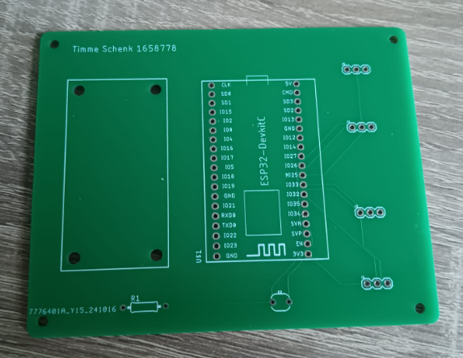
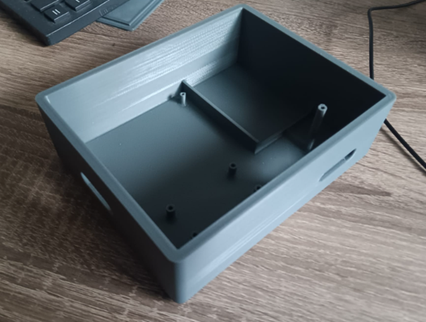

Smart technology
Vind u planten water geven ook zo saai en gaan u planten ook al na een paar weken dood. Dan hebben wij bij de
minor smart industry de oplossing voor u. Tijdens de minor wordt een automatisch plantwateringsysteem ontwikkeld
die toegepast kan worden voor iedere plant. In de volgende tekstgedeeltes wordt uitgelegd hoe ik dit heb
toegepast met een demonstratie.
Hardware
Om de plant te voorzien van water zijn diverse hardware componenten nodig. Namelijk: ESP32, pomp, vochtsensor,
luchtvochtigheidssensor, vochtsensor, lichtsensor, relay, RF transistor en de batterij. Door middel van de
vochtsensor wordt de hoeveelheid vocht in de plantenbak gedetecteerd. De lichtsensor meet de lichtintensiteit. Op
basis van deze gegevens kan de geprogrammeerde ESP32 door gebruik van de relay en transistor, water pompen wanneer
nodig en/of een lamp aandoen.
Programmeren
Om de hardware te kunnen laten werken zoals het moet is er een code nodig die op de ESP32 gezet kan worden. De
eerste stap was om de hardware te testen in het programmeer programma Visual Studio Code. Alle hardware componenten
worden individueel getest. Dit om later een overzichtelijke code te kunnen schrijven en om de werking van de
componenten te realiseren.
De code is opgebouwd uit drie segmenten, namelijk de bibliotheek, void setup en de void loop. In de bibliotheek
worden variabelen en functies gerealiseerd. In de void setup wordt de geschreven code maar eenmalig uitgevoerd aan
de start van het programma. Dit kan bijvoorbeeld het configureren van aansluitingen zijn. In de void loop wordt de
geschreven code meermalig uitgevoerd. Dit zijn bijvoorbeeld de hoeveelheid vocht meten door de vochtsensor of de
lichtintensiteit meten door de lichtsensor.
PCB
Om de componenten aan te sluiten wordt er gebruik gemaakt van een PCB. Op de PCB is er de mogelijkheid om de
transistor, vochtsensor, luchtvochtsensor, relay en lichtsensor aan te sluiten. Op deze manier kan de ESP32 de
componenten aansluiten. De componenten zijn bevestigd door middel van solderen

Componentenbakje
Om alle componenten op een handige manier op te bergen is er een componentenbakje ontwerpt. In dit bakje bevinden zich alle componenten op de pomp en vochtsensor na. Het componentenbakje is uitgeprint in het FABlab op de HAN. Het design is gemaakt in het programma Solidworks.

Demonstratie
Reflectie
Tijdens het proces heb ik geleerd hoe simpele LOT-schakelingen in elkaar zitten en hoe deze geprogrammeerd worden.
Voor de minor had ik nog geen ervaring met programmeren, op het programma Matlab na. Ondanks dat dit niet mijn
expertise is en ik later er hoogstwaarschijnlijk niet zelf mee ga werken kan ik wel dankzij deze tak van de minor
een sneller overzicht hebben van elektronische systemen. Wanneer ik in een bestaande code zou werken kan ik deze
zelf makkelijker begrijpen en benodigde veranderingen toebrengen.